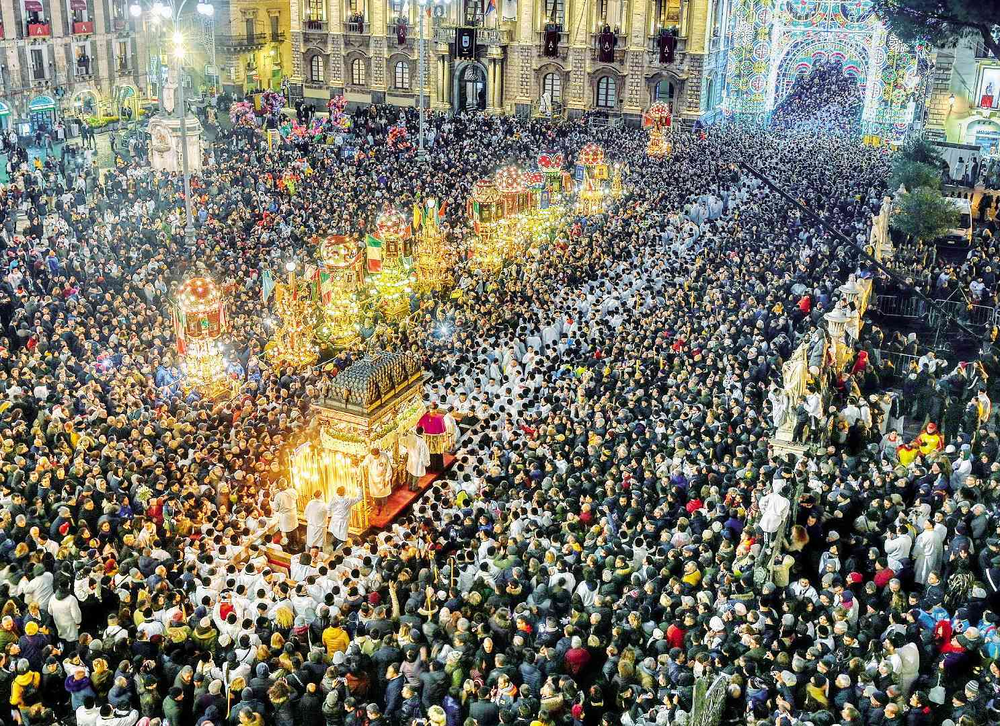

Eventi più famose della Sicilia
La regione Sicilia si trova in Italia, i fili che compongomo il tessuto della cultura dell'isola sono rappresentativi delle diverse culture che hanno colonizzato l'area nel corso dei secoli. Gli storici fanno risalire le origini della Sicilia ai Fenici, seguiti da Greci, Romani, Musulmani, Normanni, Spagnoli e, infine, Italiani. Si dice addirittura che se si vogliono veramente comprendere le origini della civiltà occidentale, non si dovrebbe guardare oltre la Sicilia.
Questi sono gli eventi più importanti della Sicilia
CARNEVALE DI ACIREALE
Il Carnevale e’ il lungo periodo festivo che precede il digiuno quaresimale nei paesi a tradizione cattolica. Si e’ creduto per molto tempo che l’origine del termine fosse legato a “carne levare”, eliminare la carne, ma l’opinione più diffusa e’, invece, che esso rappresenti un adattamento cristiano di antiche cerimonie purificatrici pagane. La ricostruzione storica del carnevale, in una città come Acireale, è alquanto complessa e le prime notizie, su presunti festeggiamenti nella terra di Jaci, risalgono al 1594, come si evince da un mandato di pagamento ordinato dai Giurati a favore dei Cappuccini per le “festi di carnivali”.
FESTA DI SANT'AGATA DI CATANIA
La festa di Sant'Agata, patrona di Catania, è una festa patronale tra le più belle al mondo, dal 3 al 5 febbraio tre giorni di culto, devozione, folclore, tradizioni. Nei giorni della festa la tradizionale Fiera di S. Agata.
SAGRA DEL MANDORLO IN FIORE DI AGRIGENTO
Sagra del Mandorlo in Fiore, dal 5 al 12 Marzo 2023 il Festival Internazionale del Folklore, Festival Internazionale I Bambini del Mondo e Corteo Storico d'Italia ad Agrigento. La Festa del Mandorlo in Fiore è un grande festival che propone esibizioni dei gruppi folk per le vie cittadine, la fiaccolata serale del folklore, spettacoli di musica folk e tante degustazioni tipiche siciliane. La città di Agrigento e la meravigliosa Valle dei Templi fanno da cornice agli eventi insieme ai mandorli fioriti.
FESTINO DI SANTA ROSALIA
a Palermo tutti amano Santa Rosalia, chiamata affettuosamente “la Santuzza”. L’enorme statua arroccata sulla cima di Monte Pellegrino domina l’intera città, richiamando la visita di abitanti e turisti. Il 14 luglio di ogni anno la città si ferma per dar vita alle sontuose celebrazioni in onore della Santa. Il Festino in onore della santa patrona viene celebrato il 14 luglio di ogni anno, e precede il giorno delle celebrazioni religiose del 15 luglio (un giorno non lavorativo per la città). La prima celebrazione si tenne nel 1625 e fu particolarmente breve, negli anni successivi i festeggiamenti diventarono sempre più sontuosi e oggi il Festino di Santa Rosalia è uno dei più grandi eventi della Sicilia.
PRESEPE VIVENTE DI CUSTONACI
Il Presepe vivente di Custonaci si svolge all'interno della Grotta Mangiapane, vasto antro naturale che si trova nei pressi del borgo di Scurati, nel comune di Custonaci, centro abitato che dista circa 20 km da Trapani e circa 90 km da Palermo.
Torna alla Homepage: